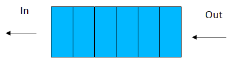
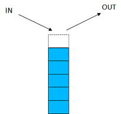

Lists
- A list (also known as sequence), is an abstract data type that implements an ordered collection of items or elements
- Unlike sets, a list can have repetitive items or elements.
- A list stores elements in a sequence
- We can access these elements using different functions
- These functions operate directly on the data structure
- Can be (theoretically) of infinite length
- Common to declarative languages
- Useful for reasoning about software due to their mathematical properties
- Understanding, Proving properties (structural induction)
- Membership
- List A = [1,2,3,4]
- For the list A
- contains 4 elements
- element 1 is a member of the list, 7 isn't.
- 1 is the first element of the list, 2 is the second element, 3 the third element and 4 the last element
- Equally, a list can contain different data types:
- [“Portugal”, “Brazil”, “Germany”] Strings
- [2.33,5.66,1.2,3.44,9.8] Reals
- ['H','e','l','l','o'] Chars
- [ ] A list can be empty
- Mixed types in some languages
- Note that unlike sets, a list can contain repeated elements:
- [1,2,3,4,3,4,3,4] is a valid list
- Relationship
- The "head" of the list is the first element of the list
- The "tail" is the remainder of the list
- For the list:
- L =[1,2,3,4],
- Head = 1, Tail = [2,3,4]
- More formally, head(L) = 1 and tail(L) = [2,3,4]
- Note:
- function head() takes a list and returns an element of the list (the first element)
- function tail() takes a list as a parameter and returns a list (all elements excluding the head)
- There are 5 operations: head, tail, cons, nil and concatenation
- head and tail are "selectors" as they return values
- cons and nil() are "constructors" as they help to construct lists
- Head and Tail operation
- Given list (L) = [1,2,7,9,2,5]
- head(L) = 1, tail(L) = [2,7,9,2,5]
- Equally, the head(tail(L)) = 2
- The tail(tail(L))) = [7,9,2,5]
- The head(tail(tail(tail(L)))) = 9
- In fact, any element of the list is accessible using head and tail
- Given set [1,3,9,4,6]
- tail(tail(tail(tail(tail([1,3,9,4,6]))))) = []
- Similarly, head([1]) = 1, tail([1]) = [ ]
- For the empty list, head and tail are not defined, just as n divided by zero for any value of n is undefined
- cons() and nil() operations
- A list can be created in three steps:
- Cons 8 onto nil, the empty list
- Cons 1 onto the result
- Cons 7 onto the result
- which is equivalent to the single expression:
- cons7 (cons1 (cons(8 nil())))
- The above gives a list [7,1,8]
- The nil() function effectively inserts a [] into the list at its end.
- List concatenation
- We can also join lists together with the "concatenate" operation
- [1,2,6,3] concatenated with [2,5,6,7] gives a list [1,2,6,3,2,5,6,7]
- The @ symbol is commonly used to express this. So for example:
- [Portugal, Brazil, Germany] @ [Spain, Holland] = [Portugal, Brazil, Gemany, Spain, Holland]
- We would like to introduce two two data structure: Queue and Stack
- A Queue (FIFO)
- A very common problem we wish to deal with some items is the order. For example the order in which they occur.
- We use a Queue. The rules of which are declared as First In First Out (FIFO).
- 
- Examples
- People waiting at the post office
- Jobs waiting for the printer
- Calls waiting to be answered
- Modelling a queue
- Modelling a queue of print jobs as a list Q:
- Q=[jobIDX04, jobIDX02, jobIDX03, jobIDX05, jobIDX07]
- How would you get the ID of the first job in the queue?
- How would Q change after that job is completed?
- How would I add the jobs from printer queue P to the end of Q?
- How is a new job added?
- A Stack (LIFO)
- Used to handle the most recent item that arrives first. Last In, First Out (LIFO)
- A fundamental data structure in Computer Science. Very important to function calls, interrupts, memory allocation etc.
- 
- Examples:
- Stack of plates or Chairs
- "Undo" button
- Interrupt handling
- Finding your way home
- Operations:
- You can add to the top of the stack - "push"
- push(3, [2,5,6,7]) = [2,5,6,7,3]
- You can remove from the top of the stack - "pop"
- Stacks grow upwards (theoretically at least)